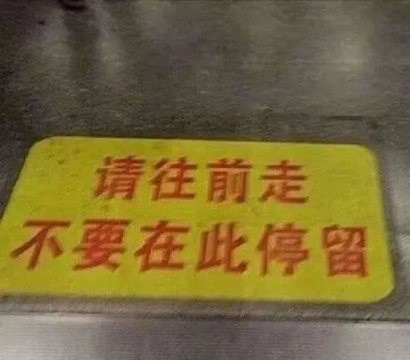
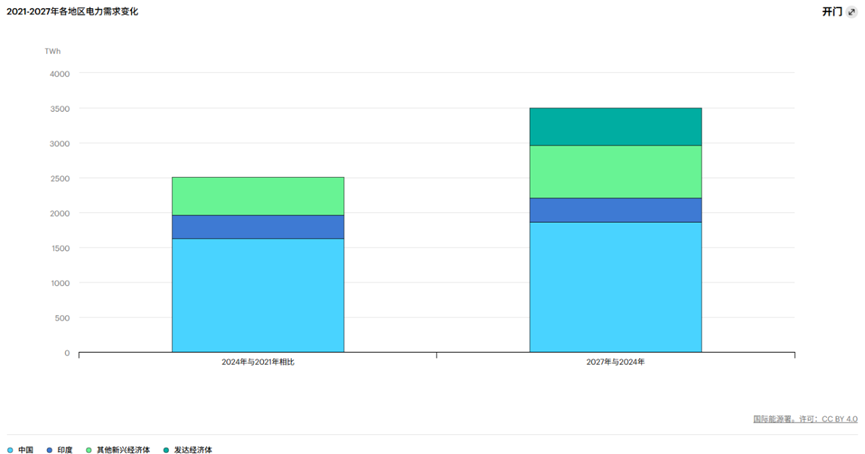

THE SIGNAL REVIEW
深度分析
2026 年 3 月 26 日 · 星期四
楚团长聊聊天 · 长文拆解
ANALYSIS · 深读
当世界重新开始修建工厂
HALO资产爆火背后，是全球再工业化的时代浪潮
在过去相当长一段时间里，投资者追逐的是轻资产、高周转、强想象力，是可以不断外推的渗透率曲线，是那些似乎不必涉及傻大黑粗，也能持续扩张的商业故事。
投资的有趣之处就在于，审美很多时候会突然转身。
今年HALO资产爆火，并呈现出持续跑赢的迹象。它们不轻盈，不性感，甚至有些笨重，却有一个非常重要的共同特征：当一个世界进入供给约束、产业安全、基础设施重建和工业化再加速的阶段时，它们往往比"远方故事"更接近真钱。
今天的全球，恰恰在这样的风口之上，欧洲的再工业化和南方资源世界的新工业化，正在成为时代的重要趋势。

楚团长聊聊天
TREND · 时代趋势
欧洲以《净零工业法案》推动本土清洁技术制造能力扩张，并提出到2030年，本土战略性净零技术制造能力接近或达到年度部署需求的40%；《关键原材料法案》则意在强化欧洲在提取、加工、回收等环节的能力，降低关键依赖。
另一边，全球南方资源世界的工业化，表现为更朴素、也更迫切的需求：要有电，要有路，要有港口，要把矿产挖出来、加工掉、运出去。世界银行与非洲开发银行发起的"Mission 300"，目标是在2030年前让撒哈拉以南非洲3亿人接入电力；而截至目前，该地区仍有大约6亿人缺乏电力接入。
国际能源署给出的数据，把这一轮变化说得更直白。2024年全球电力需求增长4.3%，2025年至2027年预计仍将保持接近4%的较快增长；到2025年，全球能源投资预计达到3.3万亿美元，其中约2.2万亿美元将流向可再生能源、核电、电网、储能、低排放燃料、效率提升与电气化，规模大约是油气煤投资的两倍。

全球能源投资持续流向清洁能源领域
欧美再工业化，意味着制造能力、能源安全、关键供应链和本土产能重新成为国家战略；全球南方资源国工业化，则意味着那些长期停留在资源输出端的国家，开始围绕电力、交通、矿业和加工能力补工业底板。这两条线看似不同，一条偏"再配置"，一条偏"从零到一"，但它们最终都指向同一个问题：谁能提供工业化所需的真实解决方案？
CHINA_ROLE · 中国的位置
中国几乎不可能缺席。
因为今天很多国家真正需要的，并不是一件孤立的商品，而是一整套能落地的工业方案：发电设备、输配电设备、自动化控制、工程机械、矿山装备、轨交、船舶、储能系统、运维能力、融资协同，以及最关键的——在足够大的规模下，把成本压低、把交付做稳。中国的优势，从来不只在某一个单点产品，而在于把这些环节组织成一整套体系。
以清洁能源链条为例，国际能源署指出，中国在光伏多晶硅、硅片、电池片、组件等主要制造环节的全球份额都已超过80%，并且包揽了全球前十大的光伏制造设备供应商。电池方面，中国在2024年贡献了全球近80%的动力电池电芯产量，正极材料占比接近85%，负极材料占比超过90%。
从外贸结构上，这种能力也在不断被验证。海关总署披露，2025年中国机电产品出口同比增长9%，占出口总额比重首次超过60%；中国机电产品进出口商会统计，2025年机电产品出口达到2.30万亿美元，同比增长8.4%，继续成为拉动整体出口增长的核心力量。
所以，从更高的视角看，HALO资产之所以重要，不只是因为它们"重"，而是因为这个世界正在重新意识到：真正决定一个国家和一个产业位置的，最终仍然是那些重、慢、硬、难以替代、并且能穿越周期的工业能力。
OPPORTUNITIES · 四大机遇
电力设备与电网基础设施链
排在最前面的，是电力设备与电网基础设施链。
无论是欧洲扩产、美国重建制造底座，还是非洲、中东、东南亚补工业短板，最先缺的几乎都不是概念，而是电。变压器、开关柜、继电保护、配网自动化、高压输变电、工业电气、储能变流器，这些听上去不够浪漫的东西，才是工业世界真正的通行证。
全球电力需求持续上行，而很多南方资源国至今仍处于"缺电、弱网、不稳"的状态，这使得电网和电气设备成为最具确定性的受益方向之一。
工程机械、重型装备与矿山设备
资源国工业化，并不是先出现在研究员的PPT里，而是先出现在矿山、港口、工业园区、公路、铁路和基础设施现场。谁能提供挖掘机、起重机、矿卡、盾构机、液压系统、工业泵阀和成套重装，谁就更容易分享到资本开支扩张的红利。
装备不是一次性消费品，它背后往往跟着配件、维修、升级和服务，这使得它比许多"景气高、兑现弱"的赛道更接近真实现金流。
工业自动化与控制系统
再工业化从来不是简单回到旧式流水线，而是更高程度的自动化、更高密度的电气化，以及更强的效率约束。变频器、伺服系统、工业软件、DCS、PLC、机器人控制与工厂自动化集成，本质上是在卖效率、稳定性和可复制的工厂能力。
在工资更高的发达经济体，这是一种成本解决方案；在刚刚起步的新工业化国家，这又是一种能力跃迁方案。
光储逆变与分布式电力系统
这条线的重要性，并不只在"新能源叙事"本身，而在于它为很多没有大电网条件的地区提供了一种更低门槛、更可部署的工业化入口。世界银行持续强调非洲等地区扩大能源接入的重要性，而国际能源署则预计，未来新增电力需求将主要由低排放技术满足。
对很多国家来说，"先有一套可用的光伏+储能+逆变+微网系统"，比等一个庞大而昂贵的传统电网，更现实，也更符合财政能力。
SYSTEM · 中国的系统打包能力
但真正优秀的中国方案，从来不只是这些单一行业的简单拼盘，而是一种"系统打包能力"。
电网设备解决"有电"；工程机械解决"开工"；自动化解决"提效"；储能与微网解决"弹性"；轨交、船舶、重卡解决"运得出去"。
中国工业最强的地方，恰恰是这些环节并不是彼此割裂的明星赛道，而是能在产业链、成本、交付和工程组织上相互咬合。
这就是为什么，中国在这一轮历史性变化中的位置，不只是"便宜制造者"，而更像是最重要的方案解决方。欧美再工业化，需要把产能、本土能源能力和工业安全重新搭起来；全球南方资源国工业化，需要第一次补齐工业底板；而中国能提供的，不只是单点设备，而是一整套从硬件、系统到交付的现实路径。
INVEST · 普通投资者如何参与
对普通投资者来说，真正重要的问题，我该怎样参与？
毕竟，大趋势听起来都很宏大，可一旦落到投资上，普通人最容易遇到的，恰恰是两个难题：一是看得懂方向，却抓不住工具；二是知道机会存在，却很难判断究竟该押哪一个细分产业。
也正因为如此，理解了这条主线之后，再来看中证装备产业指数，很多事情就清楚了。
它提供了一种更适合普通人参与这轮大趋势的方式。根据指数编制规则，中证装备产业指数从更大范围的A股样本中筛选出具备装备产业特征的上市公司，用来反映中国装备产业的整体表现，并对单一个股权重设置上限。
它不是去押一个最窄的赛道，也不是去赌某个短期最热的题材，而是试图用一篮子资产，去刻画中国工业体系里最有全球竞争力、最有可能承接这轮历史性机遇的那部分能力。
结论
当世界重新开始修建工厂，那些能够提供完整工业解决方案的企业，正在迎来属于他们的时代。HALO资产的价值，不只是重，而是重得恰到好处——在正确的时间，出现在正确的地方。
你最看好哪一类HALO资产？欢迎留言讨论。
THE SIGNAL REVIEW · 深度分析
单一主题 · 深入拆解 · 观点提炼
by 楚团长聊聊天 · 2026.03.26
原文来源：楚团长聊聊天